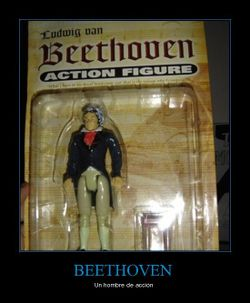

Lógica filosófica
 De: La Frikipedia, la enciclopedia extremadamente seria.
De: La Frikipedia, la enciclopedia extremadamente seria.
Un caluroso día de enero, un afamado Ludwig Wittgenstein sintió una comezón muy persistente en su lozano culo. Se rascó hasta dejarse las uñas de los dedos limadas, y cuando se dio cuenta de su obra, comenzó a llorar. De pronto, observó que en el piso había restos de uñas con mucha sangre, y decidió mirarlas bajo el microscopio. Así es omo descubrió que rascarse el culo con demasiada fuerza, hace que te duela la espalda y que las uñas te sangren. Ese fue un buen día en la vida de Ludwig, pero nada tiene que ver con nuestro artículo (lo que sucede es que, ese fue un día inspirador, y se cree que de allí partió su descubrimiento).
Su verdadero descubrimiento
 Ludwig se hizo muy famoso, por lo cual era
lógico que saliera todo el merchandesign para lucrar con su imagen.
El buen Ludwig descubrió días después que si ponías un cuchara en lo alto de una montaña, sería sencillo estructurar el pensamiento de una manera infame y sorpresiva.
La verdadera verdad veritativa
La verdad es que la historia anterior la han contado algunos filósofos, intentando engrandecer una herramienta inútil (y se cree que lo hicieron para ocultar la Homosexualidad de Ludwig).
La lógica real fue inventada por unos macacos nipones que bailan alrededor de una fuente de petróleo árabe mientras consiguen una mujerzuela rusa para vivir unos días de farra increíbles.
¿En qué consiste la Lógica?
La lógica es un grupete de truños que algunos frikis denominan: reglas menstruales, las cuales funcionan cada mes, sangrando las páginas en las cuales se escriben estas tonterías. Es necesario colocar algún instrumento que impida el paso veloz de la sangre (algunos las conocen como caballos y en Turquía se les llama sopaperas).
Algunas de estas reglas son muy peligrosas, pues si se usan sin mesura, es posible que haya perdida total o parcial de los miembros (el miembro viril está excento de cuota). Estas reglas sirven para verificar si las parrafadas dichas son en verdad parrafadas, o nos acabamos de enfrentar a una persona de mente superior (solo hay dos entidades inmunes a la Lógica: Chuck Norris y el Monstruo del espagueti volador.
La regla más peligrosa es llamada Modus Ponendo Ponnens, la cual será explicada más adelante.
Estos difíciles y desmesurados conceptos y complejas actuaciones llevaron a la aparición de las falacias (que son los archirrivales de la lógica), o lo que es lo mismo, algo ilógico (ilógico del Marroquí ilogicus cuyo significado es: viuda tetraplégica con manía persecutoria).
Ejemplifiquémoslo con varias falacias comunes:
- Soy estadounidense y uso mi cerebro para pensar
- Soy alemán y no soy nazi
- Soy un ser humano francés (todos sabemos que los franceses son de todo menos humanos)
- Los videojuegos de fútbol son más interesantes que un simulador de parchís
- Vin Diesel se peina (no le hace falta, sencillamente, no tiene pelo
¡¡NOOO!! ¡VIN! ¡¡NO LO HAGAS, NO...!!)
- Los españoles son unos
hijoputas respetables seres
Las reglas menstruales según su peligrosidad
Bakunin también analizaron estas reglas menstruales, y era
Lógico que por eso los
comunistas eligieran el color rojo.
- Modus Ponendo Ponnens: Consiste en Poner Mientras se pone, es decir, se intenta hacer un mortal hacia atras mientras se hace un mortal hacia adelante. Si no se consigue puede perderse la cordura y ambas piernas. Nivel de dificultad: 9. Puntos de experiencia: 32
- Modus Tolendo Tollens: Se pone mientras se intenta poner, es decir, se baila con una mujer mientras se folla con un tigre. Nivel de dificultad: 8 + -1 . Puntos de experiencia: 2
- Misticismo hipotético: Se cuenta una historia y después se toma una siesta. Nivel de dificultad: 9. Puntos de experiencia: 2
- Solofute: Se desconoce, pero los que lo intentan también lo desconocen. Nivel de dificultad: 65436439. Puntos de experiencia: -368431
- Silogismo tontil: Se dicen cosas absurdas, mientras se infieres otras cosas más absurdas. No vale para nada
- Erasmismo: Se suman cinco mas cuatro y se multiplica por cuatro millones. Ahí esta la clave de la vida. Su dificultad se desconoce.
- Pseudo adición: Haces como que agregas, pero la verdad no lo haces. Nivel de dificultad: 1. Puntos de experiencia: 1
- Pellizco disyuntivo: Le agarras el trasero a una mujer y corres para evitar que te pillen y te lleven a la cárcel. Nivel de dificultad: 0. Puntos de experiencia: 3.141516
Recomendaciones
- Evitar utilizar la lógica
- No mirarla a los ojos
- No asomarse por las ventanillas
- Evitar todo contacto con la lógica (en caso de ingestión, visite a su médico)
- Cantar una cancioncilla de Daddy Yankee para hacer mas llevadero el trabajo.
- si pe entonces cu y para toda equis efe de y.
- Viva ray morado!
- Eso último es humor local.
- Por eso último pueden banearme
- Y eso último me da valor para que no puedan banearme
- espero que no vayan a banearme
- tengo miedo.
Autor(es):
- Doctor grijander
- Roms
- Viento
- Guilfer
- Fasgort
- Z
- Don Anastasio
- Frikih
- Xtralargo
- Mad Max
Frikipedia 2005-2016, Licencia
GFDL 1.2 - Extraído por FrikiLeaks